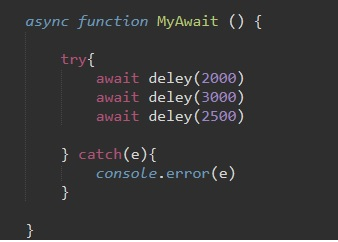
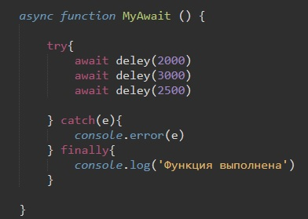

Для начала рассмотрим код написания функции, которая с помощью Promise ждет введенное в нее время, после чего выдает надпись в консоли "Прошло столько-то секунд"
И так мы объявили переменную deley, в нее помещаем стрелочную функцию, на вход которой даем значение ms (милисекунды). Эта функция будет нам возвращать Promise, который вызывает метод setInterval. setInterval в свою очередь выводит в консоль надпись и возвращает resolve промиса. SetTimeout выполнится через ms секунд
теперь если в консоли написать deley(2000), то через 2 секунды появится надпись.
Теперь создадим функцию и в нее поместим три раза нашу функцию deley c разными значениеями
При вызове нашей функции все три промиса стартанут одновременно и на экране мы увидим такую картину
т.е. мы видим что deley(2500) выполнился раньше чем deley(2500)
В промисах мы использовали метод then что бы регулировать очередность ассихронного кода
Точно для таких же целей служат операторы Async и Await
как это будет выглядеть?
Перед словом function мы указываем оператор async, это говорит о том что эта функция всегда возвращает промис.
Ключевое слово await заставит интерпретатор JavaScript ждать до тех пор, пока промис справа от await не выполнится. После чего оно вернёт его результат, и выполнение кода продолжится.
Если промис что то нам возвращает, то с помощью await мы можем записать это в переменную
Важно то, что await нельзя использовать вне функций с оператором async, а так же в функциях где async нет.
В случае если нам необходимо будет отлавливать ошибку, то весь код с await мы можем обернуть в конструкцию try catch. Вот как это будет выглядеть:
У операторов try catch так же есть блок finally, в нем помещается код который выполнится в любом случае
Вообще что делает оператор async? на самом деле он преобразует нашу функцию в промис, а это значит что после вызова нашей функции, мы можем к ней применять метов then